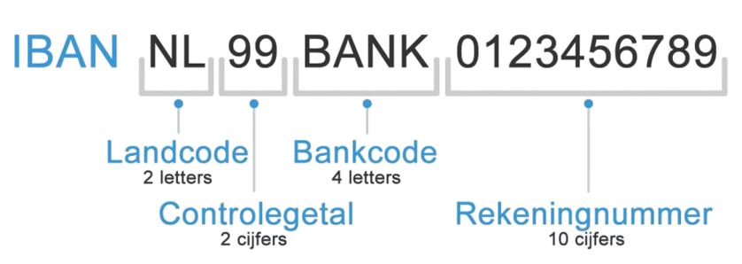

Digitale veiligheid
Encryptie
Voor een toegangscontrole moeten gegevens worden opgeslagen, maar het opslaan en verzenden van wachtwoorden, pincodes en vingerafdrukken brengt risico's met zich mee. Als hackers toegang krijgen tot een database met wachtwoorden, kunnen ze gemakkelijk persoonlijke gegevens verkrijgen. Het is moeilijk om een vingerafdruk te wijzigen in vergelijking met een wachtwoord. Ook andere gegevens, zoals bestanden op een USB-stick of computer, moeten veilig worden opgeslagen. Gevoelige bestanden kunnen worden versleuteld met behulp van encryptie. Dit houdt in dat de inhoud van een bestand wordt gehusseld met een sleutel, zoals een wachtwoord. Encryptie beschermt ook communicatie, zoals in WhatsApp, waar berichten end-to-end versleuteld worden, zodat alleen de ontvanger ze kan lezen.
DDOS
Je webmail, de website van je bank en de OV-planner moeten zo veel mogelijk beschikbaar zijn. Soms zijn websites tijdelijk niet bereikbaar, wat kan komen door een DDoS-aanval. DDoS staat voor Distributed Denial of Service, en is een aanval om een dienst tijdelijk uit te schakelen. Bijvoorbeeld, als de website van jouw school gemiddeld 100 aanvragen per minuut krijgt, kan een DDoS-aanval duizenden aanvragen per seconde veroorzaken, waardoor de website crasht. Het uitvoeren van een DDoS-aanval is technisch niet moeilijk en er zijn aanbieders op het internet te vinden die dit tegen betaling aanbieden. Maar de straffen zijn hoog. DDoS-aanvallen zijn strafbaar vanwege de grote gevolgen, zoals het gevaar voor patiënten in ziekenhuizen of het onbereikbaar maken van banken voor rekeninghouders. Er zijn manieren om DDoS-aanvallen te bestrijden, zoals het filteren van verkeer naar een website. Alleen goedgekeurd verkeer wordt doorgelaten, en ongewenst verkeer kan worden omgeleid naar een anti-DDoS-dienst. Deze dienst controleert het verkeer en laat alleen legitiem verkeer door.
